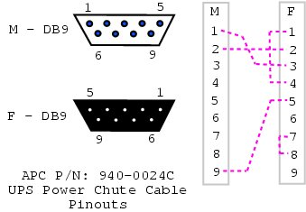
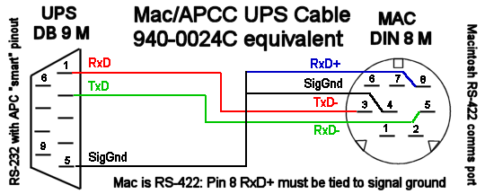
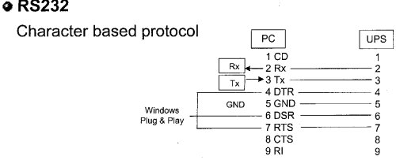
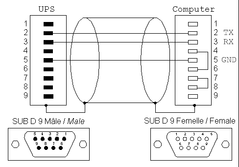
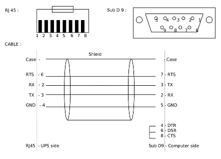
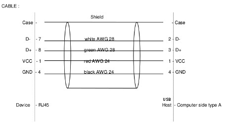
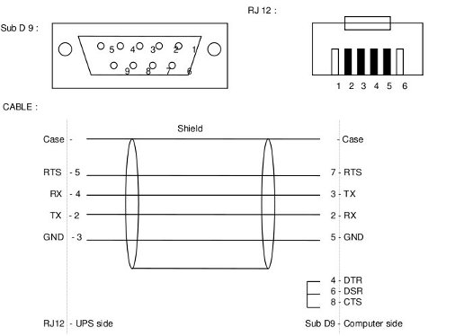
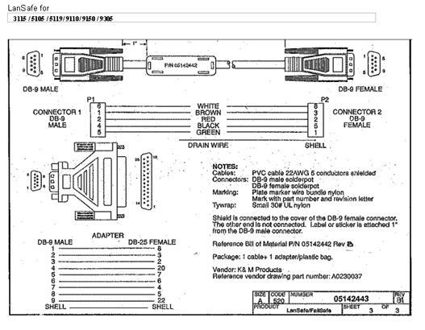
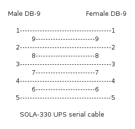
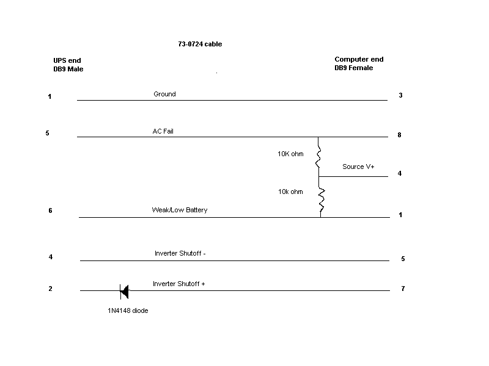

APC
940-0024C clone
From D. Stimits

| The original 940-0024C diagram was contributed by Steve Draper. |
940-0024E clone
Reported by Jonathan Laventhol
This cable is said to use the same wiring as 940-0024C clone.
940-0024C clone for Macs
From Miguel Howard

Belkin
OmniGuard F6C***-RKM
From "Daniel"
A straight-through RS-232 cable (with pins 2-7 connected through) should work with the following models:
-
F6C110-RKM-2U
-
F6C150-RKM-2U
-
F6C230-RKM-2U
-
F6C320-RKM-3U

Eaton
Documents in this section are provided courtesy of Eaton.
MGE Office Protection Systems
The three first cables also applies to MGE UPS SYSTEMS and Eaton.
DB9-DB9 cable (ref 66049)
This is the standard serial cable, used on most units.

DB9-RJ45 cable
This cable is used on the more recent models, including Ellipse MAX, Protection Station, …

NMC DB9-RJ45 cable
The following applies to the MGE 66102 NMC (Network Management Card), and possibly other models. The NMC connection is an 8P8C RJ45-style jack.
Signal |
PC |
NMC |
1,4,6 |
||
TxD |
2 |
3 |
RxD |
3 |
6 |
GND |
5 |
4 |
7,8 |
||
shield |
shield |
USB-RJ45 cable
This cable is used also on the more recent models, including Ellipse MAX, Protection Station, …

DB9-RJ12 cable
This cable is used on some older Ellipse models.

Powerware LanSafe

SOLA-330
Just uses a normal serial cable, with pin 1-1 through to 9-9.

HP - Compaq
Older Compaq UPS Family
This cable can be used with the following models:
T700, T1000, T1500, T1500j, T700h, T1000h, T1500h, R1500, R1500j, R1500h, T2000, T2000j, T2400h, T2400h-NA, R3000 / R3000j, R3000h, R3000h-International, R3000h-NA, R6000h-NA, R6000i, R6000j.
UPS PC 9 pin connector
1 --------- 3
2 --------- 2
4 -\
4 --------- 5 |
6 -/
6 --------- 7Contributed by Kjell Claesson and Arnaud Quette.
Phoenixtec (Best Power)
Many Best Power units (including the Patriot Pro II) have a female DB-9 socket with a non-standard pinout.
Signal |
PC |
UPS |
1,4,6 |
NC |
|
TxD |
2 |
2 |
RxD |
3 |
1 |
GND |
5 |
4 |
7,8 |
NC |
Sources:
Tripp-Lite
From Tripp-Lite, via Bryan Kolodziej
This cable (black 73-0844 cable) is used on various models, using the "Lan 2.2 interface" and the genericups driver (upstype=5).

Text cable references
The following original text references retain their pin diagrams, notes and contributor attribution.
APC Back-UPS RS 500 serial cable
Desc: APC UPS cable - for Back-UPS RS 500
File: apc-rs500-serial.txt
Date: 14 July 2004
Auth: Russell Kroll <rkroll@exploits.org>, Martin Edlman <edlman@fortech.cz>
This document was constructed from a mail from Martin. He figured out
the pinouts to make the Back-UPS RS 500 work with a normal serial port.
Here are the details:
---
UPS side PC side
RJ45 (8 pins) DB9F
1 orange/white 2,8,9
2 orange 1
3 green/white chassis/ground
4 blue -
5 blue/white -
6 green 5
7 brown/white 4,6
8 brown -
+---+
+-----+ +-----+
| |
+---------------+
8 7 6 5 4 3 2 1
view from back (cable entry)
---
Note this results in OL=-CTS, LB=DCD, SD=ST, CP=RTS, so it should work
with the existing genericups type 20.APC cable reference
Desc: APC UPS cables
File: apc.txt
Date: 12 February 2010
Auth: Arjen de Korte <adkorte-guest@alioth.debian.org
http://lists.alioth.debian.org/pipermail/nut-upsuser/2005-August/000118.html
Note that APC UPS serial cable part numbers follow a numbering scheme
where the "940-" prefix identifies them as cables.
940-1000 straight through cable
940-0103 null modem cable
940-0020 Basic Signaling Cable (OB and kill power)
940-0023 Simple Signaling Cable (OB only)
940-LL24 Smart Signaling Cable
940-0095 PnP Cable (see Apcupsd manual for diagram)
940-0119 Simple Signaling Cable (OB and kill power)
940-0127 RJ45-10P10C to USB Cable
940-0128 Simple Signaling Cable for Back-UPS CS
"LL" represents the length:
00 six feet
NN NN feet
The suffix letter represents a minor revision in physical design, or a
change of OEM, _not_ a change of wiring or pin-out, and all cables
differing only in this suffix letter are electrically interchangeable.
Note though the following quote from the APC Discussion Forums: "At one
point there were a small number of revision D cables [940-0024D] that
had some shielding issues from the manufacturer that could maybe cause
[...] [spontaneous] self-tests)."+-----------------------------------------------------------------+
| |
| Black APC 940-0024C Smart Signalling UPS Cable Wiring Diagram |
| This information is verified and tested to be 100% correct. |
| |
+-----------------------------------------------------------------+
| |
| DB9M(UPS) 2m Cable DB9F(Computer) |
| --------- -------- -------------- |
| |
| (SHELL)<---------+----//----+----------------<(SHELL) |
| | | |
| - - |
| | | | | |
| CHASSIS 9<--------------//---------------------<5 SG |
| | | | | |
| TXD 2<--------------//---------------------<2 RXD |
| | | | | |
| RXD 1<--------------//---------------------<3 TXD |
| | | | | |
| - - +--<1 DCD |
| | |
| +--<4 DTR |
| NOTES: |
| Cable type is shielded 28AWG. +--<7 RTS |
| The DB shells are connected | |
| to each other via the shield. +--<8 CTS |
| |
+-----------------------------------------------------------------+
| |
| Operation: The UPS communicates with the Computer via |
| ordinary RS-232 serial protocol at 2400-8N1 with software |
| flow control. Jumpered pins in the DB9F connector are for |
| automatic or PNP cable identification by UPS software. |
| |
+-----------------------------------------------------------------+| |
| Male (pins) Female (holes) |
| DB9 RS-232 PC |
| type connector 1 5 5 1 |
| ---------------- _______________ _______________ |
| Pinout numbering \ . . . . . / \ o o o o o / |
| looking into the \ . . . . / \ o o o o / |
| end of the cable ----------- ----------- |
| 6 9 9 6 |
| |
| NOTE: Solder a wire to the metal shell for use as a FRAME-GND |
| |
+-----------------------------------------------------------------++-----------------------------------------------------------------+
| |
| Gray APC 940-0020B Simple Signalling UPS Cable Wiring Diagram |
| This information is verified and tested to be 100% correct. |
| |
+-----------------------------------------------------------------+
| |
| DB9M(UPS) 2m Cable DB9F(Computer) |
| --------- -------- -------------- |
| |
| (SHELL)<-------+----//----+-------------------<(SHELL) |
| | | |
| CHASSIS 9<--+ - - |
| | | | | | |
| COMMON 4<--+---------//------------------------<5 SG |
| | | | | |
| POWER-FAIL 2<------------//------------------------<8 CTS |
| | | | | |
| SHUTDOWN 1<------------//------------------------<4 DTR |
| | | | | |
| BATTERY-LOW 5<------------//--------47K--+--47K--+--<7 RTS |
| | | | | | | |
| - - | E | |
| NOTES: |B |<--+ |
| RTS must be held at +V SPACE. +---| |
| TXD must be held at -V MARK. 2N3906 |---+--<1 DCD |
| All resistors are 5% 1/8W CF. C | |
| Cable type is shielded 28AWG. 4K7 |
| The DB shells are connected | |
| to each other via the shield. +--<3 TXD |
| |
+-----------------------------------------------------------------+| |
| Operation: The UPS communicates with the Computer via |
| the RS-232 handshaking lines only, and does not use any |
| serial protocol. Upon power fail, the UPS forces CTS to |
| -V MARK. When the battery is low, the UPS forces DCD to |
| +V SPACE via the transistor. When the Computer forces a |
| +V SPACE on DTR, the UPS will shut down and turn off. |
| Presence of the cable can be sensed by signaling on TXD |
| while monitoring DCD. |
| |
+-----------------------------------------------------------------+
| |
| Male (pins) Female (holes) |
| DB9 RS-232 PC |
| type connector 1 5 5 1 |
| ---------------- _______________ _______________ |
| Pinout numbering \ . . . . . / \ o o o o o / |
| looking into the \ . . . . / \ o o o o / |
| end of the cable ----------- ----------- |
| 6 9 9 6 |
| |
| NOTE: Solder a wire to the metal shell for use as a FRAME-GND |
| |
+-----------------------------------------------------------------++-----------------------------------------------------------------+
| |
| Gray APC 940-0095A Smart Signalling UPS Cable Wiring Diagram |
| This information is verified and tested to be 100% correct. |
| |
+-----------------------------------------------------------------+
| |
| DB9M(UPS) 2m Cable DB9F(Computer) |
| --------- -------- -------------- |
| |
| (SHELL)<-------+----//----+--------------------<(SHELL) |
| | | |
| CHASSIS 9<--+ - - |
| | | | | | |
| COMMON 4<--+---------//-------------------------<5 SG |
| | | | | |
| BATTERY-LOW 5<------------//--------47K--+--47K--+---<4 DTR |
| | | | | | | |
| | +---<6 DSR |
| | | | | | E | |
| NOTES: |B |<--+---<8 CTS |
| DTR must be held at +V SPACE. | | +---| |
| TXD must be held at -V MARK. 2N3906 |---+---<1 DCD |
| All resistors are 5% 1/8W CF. | | C | |
| Cable type is shielded 28AWG. 4K7 |
| The DB shells are connected | | | |
| to each other via the shield. +----4K7---+---<3 TXD |
| | | | | | |
| | |
| | | | | | 1N4148 |
| SHUTDOWN 1<------------//----------+----|<|-------<7 RTS |
| | | | | K A |
| POWER-FAIL 2<------------//---------------------+---<2 RXD |
| | | | | | |
| - - +---<9 RI |
| |
+-----------------------------------------------------------------+| |
| Operation: The UPS can communicate with the Computer |
| solely via the RS-232 handshaking lines, or via RS-232 |
| serial protocol at 2400-8N1 with software flow control. |
| Upon power fail, the UPS forces RI to -V MARK. When the |
| battery is low, the UPS forces DCD to +V SPACE via the |
| transistor. When the Computer forces a +V SPACE on RTS, |
| the UPS will shut down and turn off. Jumpered pins in |
| the DB9F connector allow for automatic automatic or PNP |
| cable identification by UPS software. |
| |
+-----------------------------------------------------------------+
| |
| Male (pins) Female (holes) |
| DB9 RS-232 PC |
| type connector 1 5 5 1 |
| ---------------- _______________ _______________ |
| Pinout numbering \ . . . . . / \ o o o o o / |
| looking into the \ . . . . / \ o o o o / |
| end of the cable ----------- ----------- |
| 6 9 9 6 |
| |
| NOTE: Solder a wire to the metal shell for use as a FRAME-GND |
| |
+-----------------------------------------------------------------++-----------------------------------------------------------------+
| |
| APC 940-1000 Straight Through cable |
| Universal APC serial extension cable for use in conjunction |
| with an APC UPS cable. This cable is verified to work. |
| |
+-----------------------------------------------------------------+
| |
| DB9M to UPS cable Shielded Cable DB9F to Computer |
| ----------------- --- 28AWG ---- ---------------- |
| |
| (SHELL)<----+-------------//-------------+----<(SHELL) |
| | | |
| - - |
| | | | | |
| 1<------------------//------------------<1 DCD |
| | | | | |
| 2<------------------//------------------<2 RXD |
| | | | | |
| 3<------------------//------------------<3 TXD |
| | | | | |
| 4<------------------//------------------<4 DTR |
| | | | | |
| 5<------------------//------------------<5 SG |
| | | | | |
| 6<------------------//------------------<6 DSR |
| | | | | |
| 7<------------------//------------------<7 RTS |
| | | | | |
| 8<------------------//------------------<8 CTS |
| | | | | |
| 9<------------------//------------------<9 RI |
| | | | | |
| - - |
| NOTE: The DB shells are connected to each other via the shield. |
| |
+-----------------------------------------------------------------+| |
| Male (pins) Female (holes) |
| DB9 RS-232 PC |
| type connector 1 5 5 1 |
| ---------------- _______________ _______________ |
| Pinout numbering \ . . . . . / \ o o o o o / |
| looking into the \ . . . . / \ o o o o / |
| end of the cable ----------- ----------- |
| 6 9 9 6 |
| |
| NOTE: Solder a wire to the metal shell for use as a FRAME-GND |
| |
+-----------------------------------------------------------------+GE, IMV and Victron cable reference
Desc: IMV Victron UPS cables
File: victron.txt
Date: 13 April 2002
Auth: Daniel Prynych <Daniel.Prynych@hornet.cz>
Data cable 1 for UPS:
GE/IMV/Victron Match - 500 700 700L 1000 1000L 1500 2200 3000
GE/IMV/Victron NetPro (NetPro 19 ") - 600 1000 1200 2000 3000 4000
Driver: victronups (newvictronups)
UPS PC 9 pin connector
1 --------- 3
2 --------- 2
5 --------- 5 GND
4 DTR
|
1 DCD
------------------------------------
Data cable 2 for UPS:
GE/IMV Victron Match Lite (all types)
Driver: victronups (newvictronups)
UPS PC 9 pin connector
2 --------- 3
3 --------- 2
4 --------- 5 GND
4 DTR
|
1 DCD
-----------------------------------Crack cable: for UPS
Victron Lite (no IMV Victron Match Lite)
Driver: genericups
UPS PC 9 pin connector
1 ---------- 4 DTR
7 ---------- 1 DCD ----------+
9 ---------- 8 CTS -----+ |
5 ---------- 5 GND | |
| |
R R 6,8k - 10k ohm
| |
7 RTS------+----+
----------------------------------------------
GE is General Electric Company.
On July 31, 2001, the General Electric Company, acquired IMV (Victron) company.IMV Match19 cable reference
Desc: IMV Match19 700 - 1500
File: imv.txt
Date: 06 April 2002
Auth: Niels S. Richthof <niels@richthof.de>
"UPS-VIC23-2" PC 9 pin connector
1 ---------------- 3
2 ---------------- 2
4 ---------------- 7
5 ---------------- 5MGE UPS SYSTEMS serial cable reference
Desc: MGE UPS SYSTEMS serial cable
File: mgeups.txt
Date: 10 April 2002
Auth: Arnaud Quette <arnaud.quette@free.fr> or <arnaud.quette@mgeups.com>
This document describes the cable for MGE smart protocols : UTalk (ASCII),
and SHUT (Serial HID UPS Transfer, binary) .
First notice that MGE UPS SYSTEMS supply a standard cable, bundled with
the UPS unit and compatible with MS Windows and Unices (Ref 66049). For
more information, see below note about serial cable, PnP and Unix.
Cable description
-----------------
UPS COMPUTER
MALE DB9 FEMALE DB9
2 ---------------- 2 TX
3 ---------------- 3 RX
5 ---------------- 5 GND
-- 4
|
-- 6
-- 7
|
-- 8
UPS connector description
-------------------------
5 4 3 2 1
_______________
\o o o o o/
\ o o o o/
---------
9 8 7 6
9 pin Male DB-9 connector on UPS
Notes
-----
- this is a universal serial cable, so it should work with
any MGE serial model.
- max. length of cable is 1,80 m.
- Computer pin 6 (RTS) is reserved for PnP use, which could
trouble communication on some Unices if cabled. However, new
models (such as Ellipse, Evolution, Pulsar and Comet EXtreme,
EXtreme C, ...) handle this, so you can safely cable pin 6 or
use a standard (bundled) "windows" cable (Ref 66049).Powerware cable reference
Desc: Powerware 3115 factory cable
File: powerware.txt
Date: 22 July 2005
Auth: various
1) Powerware 3115 factory cable
From Peter Åstrand <altic@lysator.liu.se>
UPS PC 9 pin connector
5 --------- 1
2 --------- 2
1 --------- 3
4 --------- 5
6 --------- 8
2) Powerware 5119 RM Cable Layout
From Daniel Thompson <danht@callthenet.com>
UPS <-----------> PC
DB9-M <--------> DB9-F
Pin 1 <-----------> Pin 3
Pin 2 <-----------> Pin 8
Pin 4 <-----------> Pin 4
Pin 5 <-----------> Pin 1
Shells Grounded Both EndsRepotec cable reference
Desc: Repotec 800A (800VA) & 162A (1600VA) cable
File: repotec.txt
Date: 11 April 2001
Auth: Theodor Milkov <zimage@delbg.com>
PC UPS
1 (DCD) <----+---------- 2
|
R 5.6k
|
7 (RTS) >----+
3 (Tx) >--------------- 6
4 (DTR) <----+---------- 5
|
R 5.6k
|
8 (CTS) >----+
5 (GND) -------------+-- 4
|
+-- 7SMS cable reference
Desc: SMS UPS cables, for Upsilon compatible SMS UPS
File: sms.txt
Date: 9 October 2001
Auth: Marcio Gomes <tecnica@microlink.com.br>
COMPUTER UPS
FEMEA DB9 MACHO DB9
2 ---------- 6
3 ---------- 9
4/8 ---------- 5
5 ---------- 8
- This cable is working with Manager III 1300 VA and 650 VA, SMS UPS's
- Jump in computer side pins 4/8 and connect to pin 1 in UPS side
- Use NUT blazer_ser driver